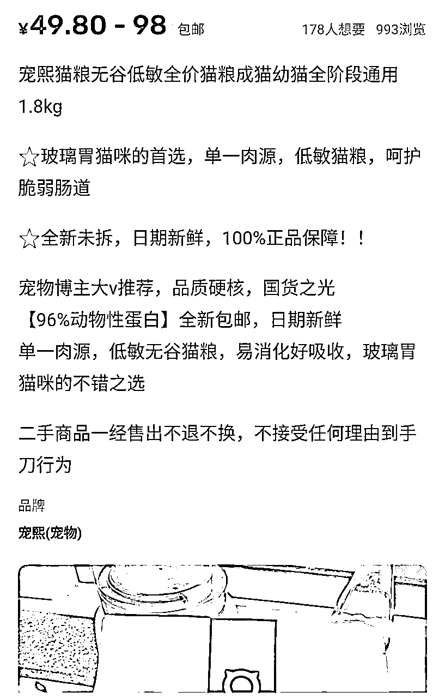
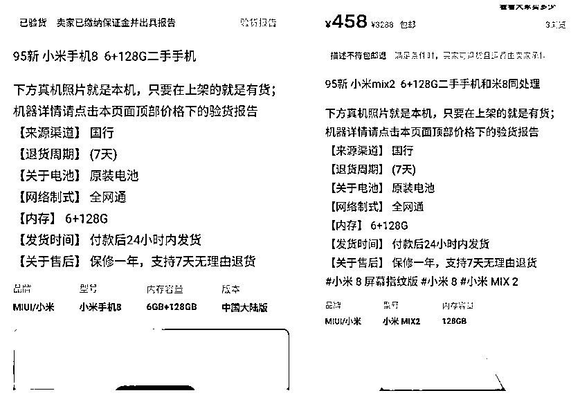
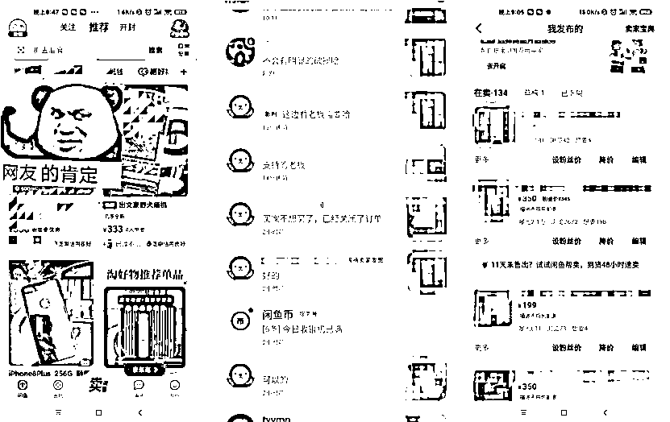
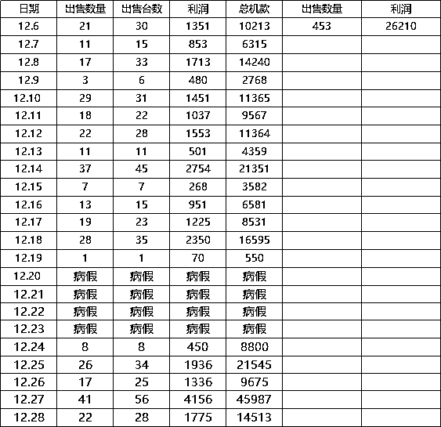
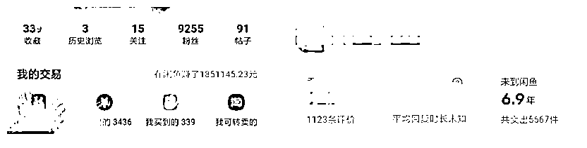

来源：https://t8g8dj5sso.feishu.cn/docx/F1iEdTA8IohiLrxIwUzc4c87nxd
前言
闲鱼吸客方法千变万化，有低价引流的，有周边引流的，现目前来说，不管新手还是闲鱼老油条都会发现一个常态，发布产品的流量日渐消瘦。
但是看着同行我想要100 1000的数量，心里非常纳闷，为什么别人发布有人看，我发布就是没流量？
今天就给大家说一个我最近研究的新方法，用这个方法，我的猫粮ip店铺，日销20+，利润1000+。
我叫顿号，简单介绍下自己：95后，目前拥有一个手机货源工作室，一个项目开发小组。
闲鱼流量这块我就不细说，估计星球很多帖子都有介绍流量怎么来的有哪些，我今天主要给大家说下创造流量这块。
非常简单的方法，就是你去卖品牌的商品，标上五折左右的价格，就可以获得非常大的流量。像猫粮就是这种玩法。知道这个逻辑之后呢，你就能听懂我接下来的分享。

我们可以看到这个猫粮，它的标题是宠熙的。其实呢，商品并不是宠熙品牌的，我们呢只是在蹭流量，那这个方法具体是怎样玩的呢？
分为两个部分，发品+销售。
用品牌商品的图片和关键词，去把这个产品去发不上来，定一个极低的价格，只要说这个品牌的知名度不错，那它的流量就不会差的。
有了流量之后呢，就是接单和销售，有顾客来了之后，不管顾客怎么说，我们先去推销一波我们自己的产品。
这时候，就需要你自己具备一个十分专业的知识，如果说你没有专业的知识，那你可以去找这个同行咨询一下，后期你就知道怎样去卖这个商品，只要你给顾客感觉是专业的，你都有很大的机会去成交这一单，因为我们的价格比品牌要低很多。
当然同样的玩法，单利润产品也受众。比如家具，电子琴，数码，家具都可以这样玩，顾客大部分都是不专业的，它需要一个专业的人去帮他决策，就像猫粮，有干的湿的，很多顾客呢，他根本不知道如何去选择，也不知道自己需要什么样子的，甚至呢，有些顾客他根本分不清干猫粮和湿猫粮的区别在哪里。
这个时候呢，就需要我们去帮他来决策，销售产品一定要记得一个技巧，不要给客户太多选择性，去引导做他做单选题，成交加倍。
你能够去帮他决策，那你就有很大可能去销售出这一单，一单赚20-50，一天赚三五百甚至上千，也是很不错的。
当然还有一种情况，客户一定要宠熙这个品牌的，那这时候呢，我们去给顾客说，这个产品呀，要一周或者是十天之后才可以发货，这个时候呢，顾客要不就选择我们推荐的产品，要不就会离开。
会离开也说明他并不是我们真正会成交的顾客，你就可以去找到更多的爆款，找到一个爆款之后，要快速的去复制到10-20的店铺，这样日入1000就很简单了。
这个方法也是通用关联性的，细心的小伙伴应该都有发现，闲鱼取消了标题/内容分类，改为统一的描述。
这一描述就更好了的为关键词扩流，但是也是因为这样，流量泛滥。
以前卡卡关键词还能登录到搜索首页，现在除非蓝海词，一般上首页的几率少之又少，当然爆款做起来除外。
复刻引流怎么做？
我这边就拿手机做例子吧。首先找到自己的对标账号，然后复制文案。修改标题 和属性描述，详情描述，直接发布。大家可以看图片效果

图一的我仿超同行的图，图二是自己的图。
当然这个也是我随便找给大家距离的，真实找对标还是找描述文字尽可能充足点的，毕竟关键词是引流很重要的点。我们这边做的目的是为了什么？大家来找不同。评论区留言。
其实闲鱼要扩大流量，无非就提高店铺权重，比如这个号：

这个是今天才上的推介页，通过复款引流这个方法，销售了17来台，利润小1000块。
以上就是最近发现的小技巧，当然还有很多技巧可以用，大家想看下次我再接着写。
给还未开始做闲鱼的新手们打个退“针”。
闲鱼这类项目很适合宝妈以及时间比较充裕的人做，但是真的不是你每天花1小时上完品就可以了。
这需要时间去维护回复，你才能赚到很多小财富，闲鱼持续做是有收益的，但是需要花费很多时间，并不是说你一天2-3个小时就能无脑月入一万，这个东西很耗精力的
就拿手机这行说，我们这边一个一个新手客服，一个人负责6个账号，全职干一个月，也就2-5W的纯利润。

工作室目前有三个客服，一个客服搭配3组账号，3个闲鱼/3个转转，一个月光在闲鱼创造的收益大概是在8-10W左右，熟悉我的也知道我在闲鱼有7年的运营经验。最开始选择闲鱼也是因为门槛较低自带流量。

所以如果抱着三天打鱼两天晒网的心态，也就不用抱太多希望，老生常谈的话了，机会永远是都是留给有准备的人，这句话也致正在努力的每位淘金之友。
闲鱼很简单，只要会上品就行了。闲鱼也很难，他可能需要更多的去思考这片红海中，如何走出自己的赛道。
不管是什么项目，各种方法和技巧也有很多，但是万变不离其宗的是，围绕产品，围绕人性需求去链接。
刚加入生财有术不久，第一次生财航海报名了三个课程，一个是个人优势，一个是闲鱼二手书，一个是运动锻炼。
也完整的感知了生财的整个体系，不愧是第一“项目”工具书。
如果对大家有帮助，那就是我分享的最大动力了，之后我会把我8年的闲鱼经验，不定期的给大家分享，希望和大家交个朋友。
我是顿号，一个在闲鱼月入10W+收益的萌新，专注闲鱼8个年头。